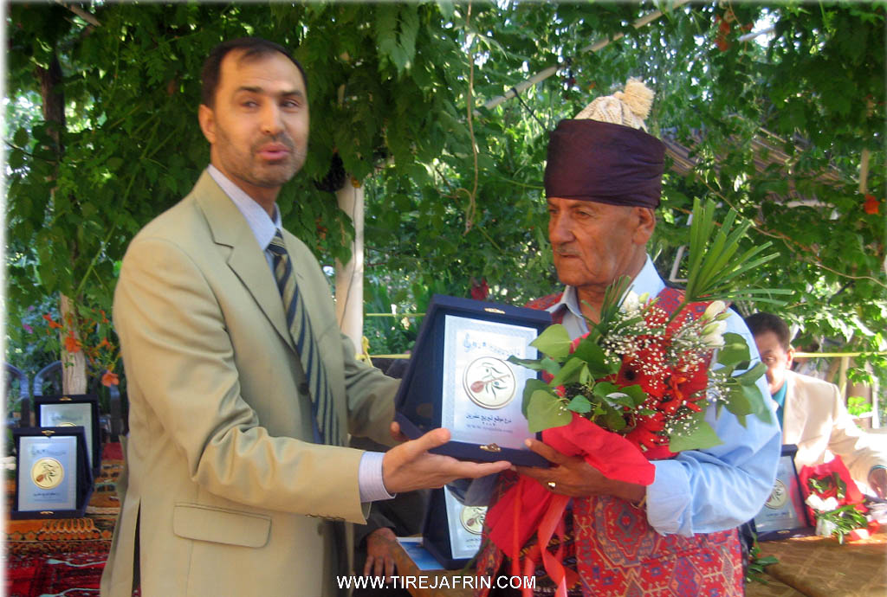
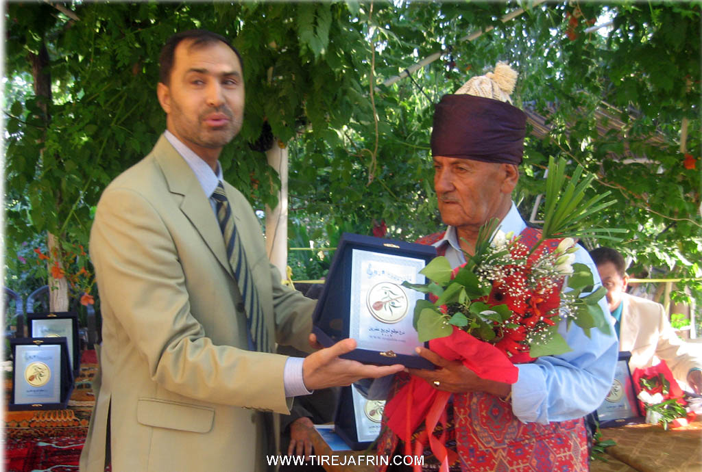

General Information
Nahiya (Subdistrict)
Markaz
Alternative Spellings
Afirîn, Afrin, Afrîn, آفرين, عفرين
Photos


 



Summaries
I. Summary from TirejAfrin Site
According to the book "Under Publication": Afrin.... its river and green hills by the writer Abdulrahman Mohammed from the village of Qatmah
Afrin: Located in the northwestern corner of Syria. Afrin took its name from the word "Afro", which in Aramaic means fertile land and is located at the southern slope of Mount Zawiya at an elevation of 392 meters above sea level and on the elevated right bank of the Afrin River, which keeps it safe from river flooding. It is connected by a fertile civilization and is 60 km northwest of the city of Aleppo. It is bordered to the north by the highlands and farms of Mount Zawiya and the village of Tell Tawil. To the south by the plain and Afrin River and the village of Karsan Tash, and to the east by the Afrin River valley and the Aleppo-Afrin road and the village of Arshqibar.
To the west lies the fertile agricultural plain and the villages of Kafr Shiel and Maarata. The history of Afrin dates back to the beginning of the twentieth century when in 1925 the site of Arshqibar Bridge was chosen to build a government house, which was the beginning of the establishment of Afrin city to become an administrative center for managing the region, as it organizationally attracted the surrounding areas and the administrative center was transferred from the village of Maabatli and Maarata to Afrin city to become the final administrative center for the region. Afrin was a place for commercial caravans to rest between Aleppo and Alexandretta Province. The city expanded after independence and incorporated some neighboring villages. Its old houses are made of stone and clay with flat wooden roofs. The city expanded during the correction era and regulatory plans were prepared to include 830 hectares. Modern concrete multi-story buildings began to spread around the old city core and on both sides of its modern streets, and new neighborhoods were established such as Al-Ashrafiyya neighborhood east of the city and Al-Mahmoudiyya neighborhood northwest of the city. Afrin city is considered one of the most beautiful small cities in the Syrian Arab Republic in terms of street organization since the French era. The inhabitants of this city work in agriculture, most importantly olives, grains, legumes, and vineyards. As for irrigated crops, they are watered from the Afrin River waters and artesian wells. The people also grow summer vegetables near the Afrin River, cotton, and sugar beet irrigated from the Afrin River. Most of its inhabitants depend, in addition to their agricultural resources, on what professional work, services, and commercial exchanges bring, and some of them work in state institutions. It has an electricity network and drinking water drawn from the Kafr Jannah spring northeast of Afrin about 7 km away and from artesian wells. It has several elementary, preparatory, and secondary schools, an industrial secondary school, and a Sharia preparatory school. Its population is about 47,108 thousand people, and the total population of the Central District is 136,873 people as of 1/1/2006. It has a cultural center, rural development center, health and veterinary centers, a post, telegraph and telephone center, a childhood care center, a guidance unit for carpet and rug making industry, in addition to official government departments. There are several mosques, the oldest being Salah al-Din Mosque near the government house. There are 11 sesame oil extraction factories, five olive oil presses, four small soap factories, and a tin plate factory. The Afrin Market (Bazaar) was also established during the era of Jamil Ahmed Bafi Agha, mayor of Afrin in 1935, where a bazaar is held every Wednesday in the city center. A city council was established in Afrin city in 1983 with ten members. Afrin is connected to Aleppo city by two paved roads: the first Afrin-Deir al-Jamal-Aleppo and the second Afrin-Darat Azza-Aleppo. Among the first inhabitants were the Armenians who fled from Turkish persecution and built their homes around the government buildings, and worked in blacksmithing and other trades that the French forces needed, especially in horse equipment preparation.
Then some regional leaders joined in building residential houses, such as Al Sido Mimi, Al Ghabari, and the leader of the Yazidis at that time Darwish Agha Shamo, then Ahmed Khalil from Oshaghli Factory and others.
Afrin Region
An administrative region in Mountain of the Kurds belonging to Aleppo Governorate, extending eastward to Mount Simaan. It is bordered to the north by Turkey, to the east by Azaz city, to the south by Mount Simaan region and Idlib Governorate, and to the west by Alexandretta Province. It consists of Afrin city and seven districts: (Central Afrin villages, Bulbul, Jindires, Rajo, Sharan, Sheikh al-Hadid, Maabatli) and a total of 263 villages and 100 farms.
Afrin River
The Afrin River is located northwest of Syria, in the Afrin region of Aleppo Governorate. It originates from Mount Lukkam and the Antab plateau and passes through Rondan. The length of its course in Syrian territory is 85 km out of its total original length of 149 km from its source to its end in the Amq Depression in Alexandretta Province.
It penetrates Syrian territory northeast of Shaltah village at an elevation of 360 m and passes near Deir Sawan village after Shaltah, crossing the Roman bridges erected on this river. It meets the Saboun River west of Vira Kan village and heads deep toward Midanki where the multiple hard rocks form waterfalls in its course in Midanki and Kumruk, penetrating the land with many bends until Afrin city. Several streams and small springs feed it and form many bends that descend to it from the heights of Mount Simaan and Lilon to the east and Mount Akrad to the west. With an average flow of 8.6 m³/sec, and in spring the flow reaches 15.6 m³/sec, sometimes causing destructive floods as happened in 1974 when the main bridge at the entrance to Afrin city completely collapsed and a replacement bridge was built. The river waters decrease and become scarce in summer, reaching a flow of 1.41 m³/sec. To regulate the river waters and benefit from its waters, the state was interested in building a dam on the river course called the Seventeenth of April Dam. The foundation stone was laid in 1980 by Dr. Abdul Raouf Qasim, former Prime Minister, to build a large dam on the river course north of Afrin city at the Midanki site. The dam lake extends eastward for about 12 km. This dam is located north of Afrin city at Midanki village and was inaugurated in 2004 by Prime Minister Engineer Mohammed Naji Atri. It will benefit from the river waters for irrigation and reclamation of an average number of hectares in the Afrin and Jindires plain up to the Turkish borders. Several bridges are also built on it west of Midanki near the Kumruk waterfalls. There are two bridges in Afrin city: the first at the site of the old collapsed bridge and the second 500 m south. There is also a third bridge at Kafir village and Birj Abdul Walaw, and a fourth bridge at Tell Salur village.
The Afrin River, especially after the establishment of the Seventeenth of April Dam, is considered the vital and important artery of the region and forms a tourist outlet for Aleppo city. Its river waters are also drawn to irrigate Afrin and Azaz cities at present.
Afrin Municipality
In 1926, the administrative center of the region moved from Maabatli village, and until 1927 the new Afrin municipality was established where the number of its houses was limited.
The first mayor of Afrin municipality from 1926 to 1930 was Mr. Jamil Ahmed Agha Bafi from Qatmah village (Afrin region), where the municipality developed with its limited capabilities. A house was built for the municipality next to the government house near the old Afrin bazaar until the sixties of this century. Due to the expansion of the city size, especially toward the north and west on the Zaydiyya-Rajo road and on the Jindires road Alexandretta Province street, and during the glorious correction era, the city area reached 830 hectares. A regulatory plan was then developed for it, including attention to irrigation and drainage networks, telephone, electricity, and water. A center for rural development, guidance unit, and health centers were also established. Several new neighborhoods were also created on the eastern side of Afrin city on the Basuta and Aleppo road such as Al-Ashrafiyya neighborhood and others.
In 1983, the new Afrin City Council was established instead of Afrin municipality in response to organizing the local administration law. The number of members of this council reached 20 members.
The city continues to grow and expand, followed by expansion in service centers such as fire departments, car garages, commercial centers, and government institutions.
The Afrin City Council is considered one of the most important councils belonging to Aleppo Governorate due to its large size.
Afrin Market (Bazaar)
Commercial markets are considered among the most important areas where people gather to meet their needs and exchange commercial goods. In the Afrin region, before 1927, the people of the region used to visit the Kilis commercial market in the Mountain of the Kurds district for shopping. After the French mandate over Syria and the transfer of Kilis city to Turkey, the remaining region was left without a market. After forming the district center in Afrin city, those responsible for district administration felt the need to establish a bazaar where people would gather. Near the old river bridge near the government house from the eastern side, a weekly market was established every Wednesday. Mr. Jamil Ahmed Agha, the municipality president, called for celebrating the establishment of this weekly bazaar, where joy celebrations were held with drums and dancing expressing the importance of the occasion. Due to the city's expansion and the inability to accommodate and the magnitude of commercial exchanges, the market was moved to another location near the official Afrin secondary school west of the city.
This market is currently considered one of the most important commercial centers in the countryside of Aleppo Governorate, where agricultural products, especially olives, are displayed. Traders and people also visit it to meet their needs.
In 2001, due to the abundance of agricultural products, the city council decided to establish the Hal Market on the Basuta road east of the city. There are also small bazaars in the district centers in Rajo, Bulbul, and Al-Hammam village.
Among the holders of higher degrees in Afrin: Ahmed al-Nasser / Doctorate in Chemistry / Britain - Hussein Habash / Doctorate in Journalism / Russia - Salah Manla Ali / Doctorate in History / Russia - Fawzi Rasoul / Doctorate in Chemistry / Germany - Fatih Baso / Doctorate in Electrical Engineering / Russia - Qader Arbo / Doctorate in Meteorology / Germany - Mohammed al-Khatib / Doctorate in Agriculture / Britain - Ahmed Sheikho / Doctorate in General Surgery / Romania
Village heads of Afrin city: Mr. Abdul Hanan Bellal / Head of Mislon neighborhood - Mr. Ghazi al-Hamid / Head of Tishrin neighborhood - Mr. Ahmed Mohammed / Head of Adar neighborhood - Mr. Mohammed Amin Aybo / Head of Progress neighborhood - Mr. Imad al-Din Sheikho / Head of Unity neighborhood - Mr. Mahmoud Hussein al-Khalil / Head of Fida neighborhood - Mr. Faiq Ali / Head of Revolution neighborhood.
According to the book Mountain of the Kurds (Afrin) Geographic Study by Dr. Mohammed Abdo Ali:
- Afrin: It is the name of the Afrin River, given to the city after its establishment at the beginning of the twentieth century. We found the name "Afrin" in its current form in four historical sources from the Islamic era: [History of Aleppo – by al-Uqaymi, page of events of 478 AH/1085 AD. And Subh al-A'sha by al-Qalqashandi, p.57. And al-Durr al-Muntakhab by Ibn al-Shahna, p.167. And Dictionary of Countries by Yaqut al-Hamawi, Part Two, p.180]. Thus, the oldest mention of the name "Afrin" in its current form dates back to 1085 AD. However, none of those sources addressed the meaning and origin of the name "Afrin". We will research here the origin and meaning of this name and mention most opinions regarding it:
1- "Afrin" in Arabic dictionaries and sources:
According to "Al-Qamus al-Wasit", that 'afar and 'affar: means mixed it with what contradicts its color, and i'tafar al-shay': meaning mixed it with dust. In the dictionary "Lisan al-Arab": 'ifrīn means "corrupted", and it was said it is corruption. It was said for everything strong: layth 'ifrīn.
As for Khayr al-Din al-Asadi, he says: the word Afrin means dust. He quotes from Father Shalhat: that it means dust, /Vol.5, p.413/, in Abdullah al-Hulw's inquiries about this and he says: (Was the region distinguished by the abundance of its dust so it was named thus? The fact is that there is no other explanation, p.396). But it seems that Mr. al-Hulw does not know that the Afrin region is rich in water and forests, and dust is rarely stirred up in it.
2- Afrin in Assyrian and Greek texts:
An Assyrian text dating to 876 BC mentioned (that the Aprie River waters the Patin plain). The famous Greek historian "Strabo" also mentioned the name of the Afrin River in the same form "Aprie" in the first century BC.
Historians have agreed that the origin of the word Apre is from the Lycian language, one of the ancient Indo-European languages in Anatolia, and the basic form of the word is: Eple. As we know, the root Ap- in ancient Aryan languages including Kurdish means water. The Kurds according to their dialects replace the letter p with v so it becomes Av. The word remained in the Indian subcontinent in its old form in terms of pronunciation and meaning, and did not change, meaning "water", and is pronounced as Ab or Ap, such as the name "Punjab" which consists of two syllables: Pênc five, and Ap water. Due to the absence of the letter P in Arabic, it is replaced by the letter "f" just as the letter alif is replaced by "ayn", and thus the first syllable of that word becomes "af" instead of Ap-.
As for the syllable re-, it is the first syllable of the old Kurdish word "riwîn" Riwîn meaning "the red earthy color". It is said Bizina rwîn "the red earthy colored goat, or the one with red earthy ears", and it is also said Ava riwîn "the red earthy colored water". By combining the two words: water Av and earthy color Riwîn, a new name is formed: Avariwîn or Avriwîn "Ava Riwîn or Afrwîn", and as can be observed, it almost matches the form of the word "Afrin" in terms of structure, and means water with a red earthy color, which is a known characteristic of the Afrin River waters during its frequent floods. Elderly residents of the region in the northern villages still pronounce the name Afrin as "Afrân", which is a word referring to the remains of grass, trees, and earthy-colored foam that float on the river surface during its flood.
If we take the root -rê or -lê with its other Kurdish meaning, i.e., "stream, creek, road", the complete name would mean "water stream or water creek".
3- **Afirîn: A Kurdish word meaning creation and giving. The Afrin River, with its flowing waters, was and still is a source of life and a spring of giving. Hundreds of prosperous villages spread along its banks, just as the ruins of dozens of cities, villages, and vanished fortresses lie along its banks. It is no wonder that the Kurds call the river the characteristic of "life and fertility giver" Afirîn, just as they call women "Afret" "life creator".
Thus, whatever the meaning and source of the name, the ancestors of the Kurds from the Hurrians, and after them the Hittites and Medes, had a permanent presence in the Taurus regions in the period before and after Christ. Hundreds of Kurdish prosperous villages currently spread from its source to its mouth along the banks of the Afrin River. The Kurds and their ancient ancestors were permanent inhabitants of the entire Afrin River basin, and the river was known by them whether its name was Aprie or Afrin or Afirîn. However, despite this, knowing the origin of some ancient names remains an extremely difficult matter.
- Sources indicate that during the Roman era, a Roman "fast" road passed through the site of Afrin city. Excavations on both sides of the Jindires road street revealed massive carved archaeological stones and large pottery jars, indicating ancient settlement at the site. There were also several caves and caverns north of the old electricity company building, which were used in the past by travelers, as evidenced by the old metal coins that appeared on their floors.
History books also mention that in the Middle Ages - around the fourteenth century AD - there was a bridge named "Qibar" at the city site. In the late Ottoman era, there were several inns for housing caravans and travelers north of the current bridge.
Afrin city currently consists of the following neighborhoods:
The Old Town: Work began on constructing government buildings and civil administration offices such as the police station, prison, and palace at the beginning of the French era, and their construction was completed between 1925 and 1930. During their construction, the Jindires road street was established, and shops, commercial stores, and two small hotels were built on both sides.
The first inhabitants of the city were Kurds from Karsan village and some Armenians who sought refuge with the French forces to escape Ottoman persecution. Then some regional leaders joined in building residential houses, some regional wealthy families from Al Ghabari, Sheikh Ismail, Sido Mimi, Ahmed Khalil Agha, and Darwish Agha, leader of the Yazidis.
Afrin remained a small town until the late sixties of the twentieth century, and its few houses spread harmoniously and beautifully on the lower mountainous slope, mostly mud-brick and roofed with wood and single-story.
After that date, the town witnessed major urban expansion due to heavy local migration to it, and large new neighborhoods were formed, known popularly as follows:
- Al-Mahmoudiyya neighborhood: In the northwest of the city, named after Mahmoud Qadib al-Ban as the first to build a house for living in it in the early seventies of the twentieth century.
- Al-Zaydiyya neighborhood: In the north, which is the old Zaydiyya, inhabited by farmers and agents affiliated with some Aleppine Christian families who had placed their hands with the help of European and French consulates on the adjacent plain of Afrin city from the west. This neighborhood extended north until it currently reached the summit of the Xemrevîn highland. The residents of this neighborhood are a mixture of Kurds, some Arabs, and Circassians. The name is attributed to the shrine of "Sheikh Zaid" located inside the Zaydiyya cemetery on the hilltop.
- Al-Ashrafiyya neighborhood: In the east, a new neighborhood located east of the river on the volcanic Empêlk plateau parallel to the Afrin River course. This neighborhood was established in the late sixties of the twentieth century, and its first resident was Wehîdê Aşvan "Wahid al-Tahhan" from Kafr Batera village, who had built a mill operating with diesel and a house for living there. The current Al-Ashrafiyya is a large neighborhood whose modest houses spread over the entire western slope of the Empêlkê highland. It is inhabited especially by migrants from the region's villages, and most of them work in agricultural labor, and this neighborhood is considered the poverty belt of Afrin city.
- Qaraci Gênco neighborhood Taxa Qeracî Gênco: Located south of the city on the southern part of the Empêlk plateau, the neighborhood is named after the landowner "Kanjo Fio", and some currently call it "Tarnda Road neighborhood" for its location on the old Tarnda village road. The first to build a house for living there was the cook "Horik" around 1970.
The houses of this neighborhood spread on the western slope facing the Afrin River, taking a north-south extension and reaching Tarnda village, which was also annexed to the administrative boundaries of Afrin city.
- Al-Bobna neighborhood: A small street adjacent to the western bank of the Afrin River upon its arrival to the city. Most of its residents are Arab Bobna, and its location was a livestock market.
- Al-Autoestrad neighborhood: Located west of the city, a modern neighborhood built in beautiful and modern floors.
Afrin city is the capital of the Mountain of the Kurds and the main center for its economic, social, and administrative activity. It is a beautiful and quiet city with a distinguished geographical location and pleasant climate. The Syrian Geographic Dictionary says about it that it is the most beautiful small city in Syria.
An important construction movement began in Afrin city in the last decade of the twentieth century, as multi-story buildings rose in it, and many good and diverse commercial stores were established. It currently has daily commercial markets for agricultural and animal products, in addition to the weekly Wednesday market and another livestock market.
The city and its surrounding areas have olive presses, factories for manufacturing tahini and soap, others for building materials and some food products, and a soft drinks factory whose establishment dates back to 1927. There are many carpentry, blacksmithing, machinery and vehicle repair shops, and others. It also has dozens of doctors and pharmacies, in addition to four private hospitals. Due to the settlement of tens of thousands of the region's sons in Aleppo, there is constant and heavy transportation movement to and from it.
The population of Afrin city according to its municipality's estimates in 2006 reached about 84,000 people.
V. Links
- Tirejafrin
http://www.tirejafrin.com/site/kura%20afrin%20markaz-afrin.htm - Local FB page
https://www.facebook.com/AfrinCityNew/
https://www.facebook.com/Afrinemin/ - Drone video
https://www.youtube.com/watch?v=LjZqInXe_zw
https://www.youtube.com/watch?v=VJhCblNJjTI
https://www.youtube.com/watch?v=y23xHfuxb4s
https://www.youtube.com/watch?v=2uxYik8k5WM
https://www.youtube.com/watch?v=xmLR0s1cCIY
https://www.youtube.com/watch?v=8q1Y5o3i710
https://www.youtube.com/watch?v=kdsOme19q28
https://www.youtube.com/watch?v=05OPi8NI3gY - 3d photography
https://www.facebook.com/photo/?fbid=170546286001181
https://www.facebook.com/Abdul.rahman.krij/photos/pb.100075556642769.-2207520000./203540965351317/?type=3 - video
https://www.youtube.com/watch?v=4xmBN1kRIAI
https://www.youtube.com/watch?v=k3bTM98TKUQ
https://www.youtube.com/watch?v=m6pBuhEH3MU
https://www.youtube.com/watch?v=QxSDt6-qjkI
https://www.youtube.com/watch?v=tBwlBA185wA
https://www.youtube.com/watch?v=LiPg7vUPHXE
https://www.youtube.com/watch?v=7__Ss_97Q_s
https://www.youtube.com/watch?v=TnGby-kSFtM
https://www.youtube.com/watch?v=FbBzHZPQnn4